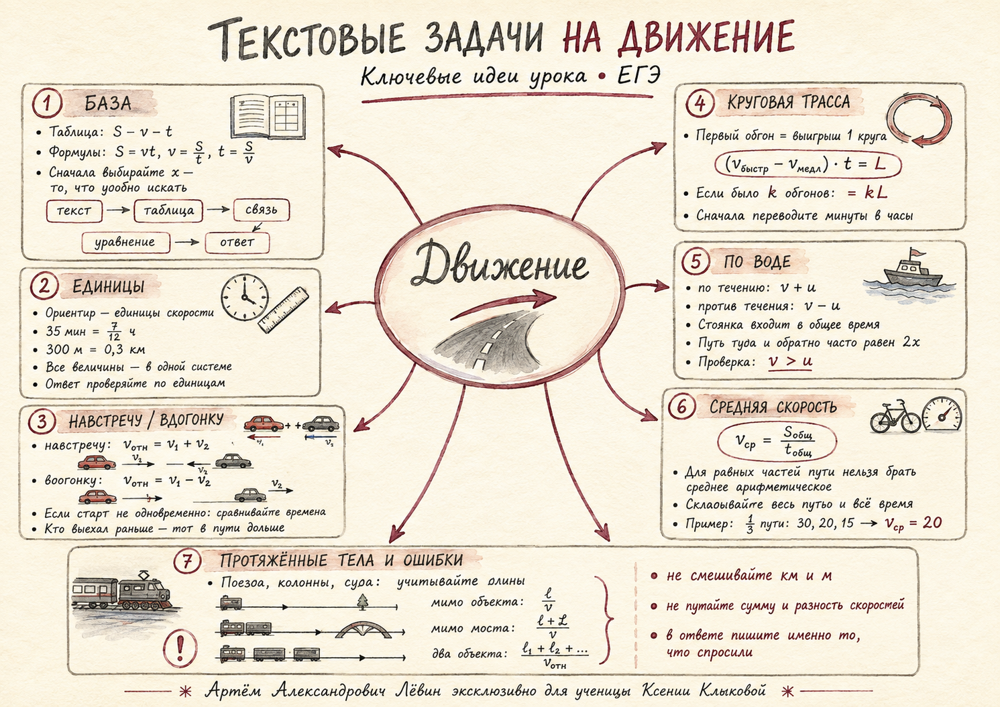
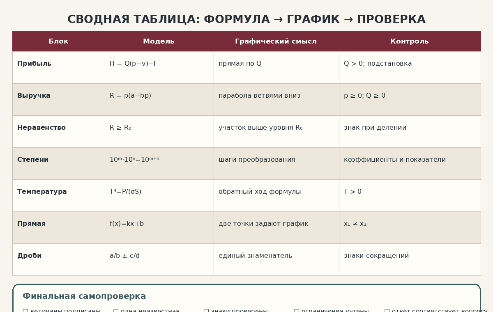

Главная формула
Путь S
км или м
км или м
Скорость v
км/ч или м/с
км/ч или м/с
Время t
ч, мин или с
ч, мин или с
Переменная x
искомая или удобная величина
искомая или удобная величина
Соберите условие в таблицу S–v–t, найдите смысловую связь и превратите текст в корректное уравнение. Здесь объединены все ключевые модели урока.
Быстрое повторение формул, схем и типичных ошибок.


| Участник | v | t | S |
|---|---|---|---|
| Первый | 60 | x/60 | x |
| Второй | 65 | (435−x)/65 | 435−x |
x/60 − (435−x)/65 = 1.
65x − 60(435−x) = 3900.
125x = 30000.
x = 240 км; времена равны 4 ч и 3 ч.
1,5x = 0,3.
x = 0,2 ч.
0,2·60 = 12 мин.
После k обгонов выигрыш равен kL.
t = 7/12 ч.
(x−54)·7/12 = 21.
x = 90 км/ч.
v₀ + u
v₀ − u
x/28 + 5 + x/22 = 30.
x = 308 км.
2x = 616 км.
Sобщ = 3x.
x/30 + x/20 + x/15.
vср = 20 км/ч.
t = l/v
t = (l+L)/v
t = (l₁+l₂)/vотн
120+80+400+600 = 1200 м = 1,2 км.
12 мин = 0,2 ч.
Δv = 1,2/0,2 = 6 км/ч.
216 км; x/72 − (366−x)/60 = 0,5.
21 мин.
93 км/ч.
210 км.
30 км/ч.
62 км/ч.
12 с.
30 с.
20 км.
21 км/ч; 36/(v+3)+36/(v−3)=3,5, v>3.
Отметьте освоенные навыки.